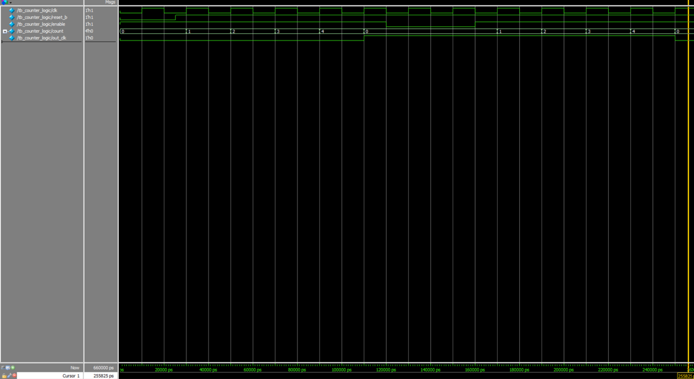
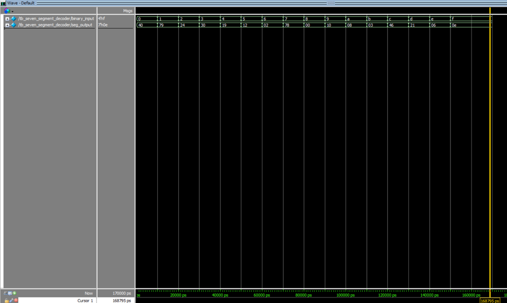
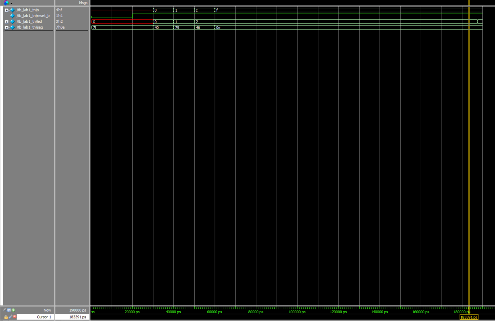
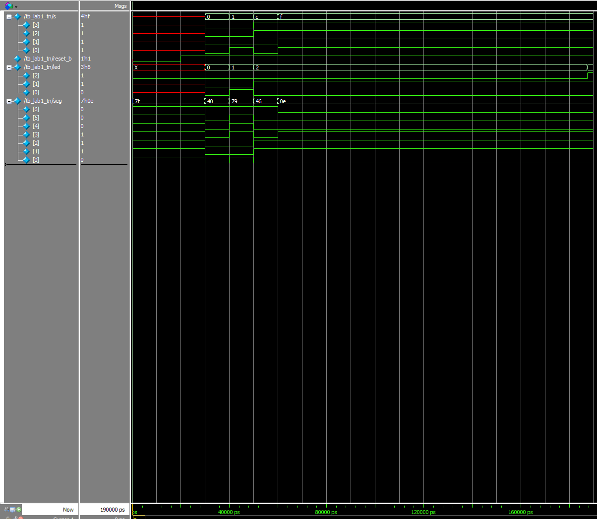

Lab 1: FPGA and MCU Setup and Testing
Hardware
A seven-segment display circuit is created to output a hexadecimal number given the user’s input via the on-board DIP switch. In this case, a common anode seven-segment display is used and is active-low, which means that “0” is treated as ON and “1” as OFF.
For each of the seven cathode pins on the display, a current-limting resistor is placed in series before routing back to the pins. This then ensure that each segment falls safely within a 5-20 mA target for recommended operating conditions. There are also pull-up resistors used to avoid invalid logic levels and they are configured with the pins connected to s[3:0]. The iCE40 FPGA provides the internal pull-up resistors. On-board LEDs are also used for in relation to the switches and clock.
The list of components used included:
- 1x E155 kit materials
- 1x Common Anode Seven-Segment Display (e.g. HDSP-511A, MAN6460, MAN6410)
- 7x 220 ohms current-limiting resistors
Resources used for hardware connections included:
Verilog
Lab 2 modules included “counter_logic,” “seven_segment_decoder,” and “lab1_tn” as the top-level module to tackle the challenge of creating a 7-segment display circuit with current-limting resistors and LED indictors.
Reveal System Verilog Code: counter_logic Module
/*-----------------------------------------------------------------------------
* Author: Tiffany Nguyen
* Email: tiffnguyen@g.hmc.edu
* Date: September 4, 2026
*
* Purpose: A parameterized synchronous counter module used to track clock cycles up to a
* specified maximum value and toggle a signal at a desired frequency. Implemented in a single
* always_ff block with synchronous reset and enable controls to meet style specifications.
*
* Note: WIDTH and MAX_COUNT calculations from wanting flashing rate of the LED as
* 2.4 Hz in Lab 1.
-----------------------------------------------------------------------------*/
// # = used to pass or declare parameters (constants that customize size, latency, or behavior of module before it is instantiated/compiled)
`timescale 1 ns/1 ps
module counter_logic #(
parameter int WIDTH = 24, // Data bit-width of counter register
parameter int MAX_COUNT = 9999999 // Parameter to specify max count values for counter module
)(
input logic clk, // Internal high-frequency source clock
input logic reset_b, // Synchronous active-high reset
input logic enable, // Active-high count enable
output logic [WIDTH-1:0] count, // Numerical counter value output
output logic out_clk // Slow toggled output signal
);
// Internal count tracking register
logic [WIDTH-1:0] count_reg = '0;
logic state_reg = 1'b0;
// Single always_ff block to avoid inference of unintended latches
always_ff @(posedge clk) begin
if (!reset_b) begin // Standard active-low configuration
count_reg <= '0;
state_reg <= 1'b0;
end else if (enable) begin
if (count_reg >= MAX_COUNT) begin
count_reg <= '0; // MAX_COUNT feature sets counter back to 0 when counter reaches max value
state_reg <= ~state_reg; // Toggle the clock output pin by invert output state at terminal count
end else begin
count_reg <= count_reg + 1'b1;
end
end
end
// Expose structural state register status to output port
assign count = count_reg;
assign out_clk = state_reg;
endmoduleReveal System Verilog Code: seven_segment_decoder Module
/*-----------------------------------------------------------------------------
* Name: Tiffany Nguyen
* Email: tiffnguyen@g.hmc.edu
* Date: September 4, 2026
*
* Purpose: This module uses a combinational logic block to decode the 4-bit binary input
* s[3:0] into hex digits (0 to F). A common-anode 7-segment display is used, so segments are
* active-low (driving 0 turns the segment ON, 1 turns it OFF). Formatted with explicit case
* handling to eliminate latch inference.
*
* Let: seg[6:0] = {G, F, E, D, C, B, A}
* Logic behavior: 0 = ON, 1 = OFF
*---------------------------------------------------------------------------*/
`timescale 1 ns/1 ps
module seven_segment_decoder (
input logic [3:0] binary_input, // 4-bit input from DIP switches / 4-bit hexadecimal input value
output logic [6:0] seg_output // Recall how letting seg[0] = A and seg[6] = G, so let [6:G, 5:F, 4:E, 3:D, 2:C, 1:B, 0:A]
);
always_comb begin
case (binary_input)
// Common-Anode: 0 = Segment ON, 1 = Segment OFF
// Bits: [6:0] seg -> G F E D C B A based on on letting seg[6] be G and seg[0] be A in Fig. 1 of E155 Lab 1 instructions
4'h0: seg_output = 7'b1000000; // ‘0’
4'h1: seg_output = 7'b1111001; // ‘ 1’
4'h2: seg_output = 7'b0100100; // ‘2’
4'h3: seg_output = 7'b0110000; // ‘3’
4'h4: seg_output = 7'b0011001; // ‘4’
4'h5: seg_output = 7'b0010010; // ‘5’
4'h6: seg_output = 7'b0000010; // ‘6’, Unique from b
4'h7: seg_output = 7'b1111000; // ‘7’
4'h8: seg_output = 7'b0000000; // ‘8’, Unique from b (All segments ON)
4'h9: seg_output = 7'b0010000; // ‘9’
4'hA: seg_output = 7'b0001000; // ‘A’
4'hb: seg_output = 7'b0000011; // Unique lowercase 'b' (to avoid looking like ‘6’ or ‘8’)
4'hC: seg_output = 7'b1000110; // ‘C’
4'hd: seg_output = 7'b0100001; // Unique lowercase ‘d’
4'hE: seg_output = 7'b0000110; // ‘E’
4'hF: seg_output = 7'b0001110; // ‘F’
default: seg_output = 7'b1111111; // All segments OFF
endcase
end
endmoduleReveal System Verilog Code: lab1_tn Module
/*-----------------------------------------------------------------------------
* Author: Tiffany Nguyen
* Email: tiffnguyen@g.hmc.edu
* Date: September 4, 2026
*
* Purpose: This top-level module implements the Lattice iCE40 HSOSC (High-Speed
* OSCillator) instantiated module, which outputs a structural 48 MHz clock signal internally.
* Only instantiated modules for 7-segment display decoder and a 2.4 Hz blink rate counter are
* used, along with switch-to-LED ‘assign’ logic for operating the physical board LEDs and
* switches.
-----------------------------------------------------------------------------*/
`timescale 1 ns/1 ps
module lab1_tn #(
// Default parameters map to 2.4 Hz physical board requirements (found in counter_logic.sv)
parameter int TOP_WIDTH = 24,
parameter int TOP_MAX_COUNT = 9999999
)(
input logic [3:0] s, // 4 DIP switches with s[3] = S3, s[2] = S2, s[1] = S1, s[0] = S0 (SW6)
input logic reset_b, // Active low input that resets all sequential state, map it to a button on motherboard
output logic [2:0] led, // 3 On-board LEDs
output logic [6:0] seg // Common-anode 7-segment display segments (A to G)
);
// Internal timing logic nets
logic clk_48mhz; // Internal clock signal generated by HSOSC primitive (48 MHz)
logic led2_blink; // Output from the counter block
// Create a dummy 24-bit net to capture the unused numerical count bus
// Note: helps avoid warning on code line with blink_counter instance, where count expects 24-bit wide vector bus since set TOP_WIDTH = 24
logic [TOP_WIDTH-1:0] dummy_count;
// 1. === Instance of HSOSC internal chip cell primitive (48 MHz) ===
// Internal high-speed oscillator (copied from Lab 1 starter code’s top.sv but replaced “int_osc” with “clk_48mhz”)
HSOSC hf_osc (.CLKHFPU(1'b1), .CLKHFEN(1'b1), .CLKHF(clk_48mhz));
// 2. === Continuous Switch-to-LED Assignment Tables ===
// Note: Corresponds to tables defining relationship of the LEDs to the switches and clk, but using logic gates and led[2] continuously blinking at 2.4 Hz
assign led[0] = s[1] ^ s[0]; // ON when S1 != S0 (XOR)
assign led[1] = s[3] & s[2]; // ON only when S3 == 1 AND S2 == 1 (AND)
assign led[2] = led2_blink; // Driven by the 2.4 Hz clock divider
// 3. === Sub-module Instantiation: 2.4 Hz Blink Counter ===
counter_logic #(
.WIDTH(TOP_WIDTH),
.MAX_COUNT(TOP_MAX_COUNT) // Passes down the parameter from the top-level header
) blink_counter (
.clk(clk_48mhz),
.reset_b(reset_b), // Hardcoded to constant active high so it counts continuous
.enable(1'b1), // Module permanently enabled / Hardcode constant active enable
.count(dummy_count), // Connected to a matching 24-bit vector
.out_clk(led2_blink) // Routed straight up to control led[2] (single-bit toggle wire)
);
// === 4. Sub-module Instantiation: 7-Segment Display Decoder ===
seven_segment_decoder display_decoder (
.binary_input(s),
.seg_output(seg)
);
endmoduleSimulation
Testbenches for the each of the modules were created and then simulated to evaluate code performance to expectations.
For the counter module, it was tested for its reset, enable, and max count features.
Reveal Testbench Code: tb_counter_logic
/*-----------------------------------------------------------------------------
* Author: Tiffany Nguyen
* Email: tiffnguyen@g.hmc.edu
* Date: September 6, 2026
*
* Purpose: A stim/assert testbench for the counter_logic module that does not need to cover all
* possible states. However, a small parameter limit (e.g. MAX_COUNT = 4) is injected to
* override runtime bounds and to verify if the reset, enable, and max count features are working
* correctly.
*
* Note: By aligning time delay increments directly to the clock period steps (e.g. #70, #20, #40, #80), can cleanly step through the state transitions without relying on sequential loop syntax
-----------------------------------------------------------------------------*/
`timescale 1 ns/1 ps
module tb_counter_logic();
logic clk; // Simulation system clock
logic reset_b; // Active-high reset
logic enable; // Active-high clock enable
logic [3:0] count; // Toggled output signal under test (Hardcoded as 4-bit wide vector tracking bus matching parameter when WIDTH = 4 for logic [WIDTH-1] count in counter_logic.sv)
logic out_clk;
// Instantiate counter with small terminal count parameter for fast simulation
counter_logic #(
.WIDTH(4),
.MAX_COUNT(4) // Shortened max limit to explicitly test rollback rule
) dut (
.clk(clk),
.reset_b(reset_b),
.enable(enable),
.count(count),
.out_clk(out_clk)
);
// Generate simulation clock (50 MHz clock frequency -> 20ns period)
always begin
clk = 0; #10;
clk = 1; #10;
end
initial begin
$display("[START] Verifying sequential counter sub-module behaviors...");
// 1. === Verify Active Reset Condition ===
reset_b = 0; // Set to 0 for active-low reset tracking (since used if (!reset_b) in counter_logic.sv)
enable = 1;
#25; // Advance past the first active clock edge
assert (count == 4'd0 && out_clk == 1'b0)
$display("PASSED! Counter successfully held to zero during active reset.");
else
$error("FAILED! Counter failed reset initialization behavior. Got count=%d, out_clk=%b", count, out_clk);
// Deassert reset to begin tracking counts
reset_b = 1; // Set to 1 to let the counter increment (since used if (!reset_b) in counter_logic.sv)
// 2. === Verify Max Count Rollover Flag Toggle ===
// To reach count = 4 and toggle on the 5th edge:
// Counts: Edge 1 (0->1), Edge 2 (1->2), Edge 3 (2->3), Edge 4 (3->0 and toggle)
// Since clock has a 20 ns period (10 ns low, 10 ns high), each full cycle takes exactly 20 ns. Waiting 4 cycles is equal to 80 ns delay -> use #70 for explicit time delays for moving thru counter states
#70;
assert (count == 4'd4)
$display("PASSED! Counter accurately incremented up to MAX_COUNT (4) and successfully toggled output register.");
else
$error("FAILED! Counter did not reach MAX_COUNT. Got: %d", count);
// Add 20 ns to step exactly 1 cycle forward to 115ns (just past the 5th edge at 110ns).
// This edge triggers the rollover and toggles out_clk to 1.
#25;
assert (count == 4'd0 && out_clk == 1'b1)
$display("PASSED! Counter reached limit, rolled back to 0, and successfully toggled output clock register");
else
$error("FAILED! Counter failed rollback or flag inversion.");
// 3. === Verify Clock Enable Stalling functionality ===
enable = 0; // Freeze counter operation
#40; // Wait two clock periods to prove data stays frozen
assert (count == 4'd0 && out_clk == 1'b1)
$display("PASSED! Counter ignored clock cycles while enable signal was held low.");
else
$error("FAILED! Counter updated state while enable was disabled.");
// 4. === Verify Recovery and Continual Counting ===
enable = 1; // Unfreeze counter operation
#80; // Wait for next rollover cycle / Wait 4 more cycles (80ns) to reach MAX_COUNT again
assert (count == 4'd4 && out_clk == 1'b1)
$display("PASSED! Counter resumed counting and toggled state register back.");
else
$error("FAILED! Counter failed to resume accurate operation after re-enabling.");
// Wait 1 more cycle (20ns) to see it roll back to 0 and pull out_clk back down to 0
#20;
assert (count == 4'd0 && out_clk == 1'b0)
$display("PASSED! Counter resumed counting and toggled state register back down smoothly.");
else
$error("FAILED! Counter failed to complete continuous oscillation phase loop.");
#50 $finish;
end
endmoduleSimulation Screenshots: tb_counter_logic

For the seven-segment module, it was tested for all of the input-output pairs.
Reveal Testbench Code: tb_seven_segment_decoder
/*-----------------------------------------------------------------------------
* Author: Tiffany Nguyen
* Email: tiffnguyen@g.hmc.edu
* Date: September 6, 2026
*
* Purpose: An automated stim/assert testbench for seven_segment_decoder.sv (combinational
* module) that cycles through all 16 possible input combinational combinations of the DIP
* switches (all 16 input-output pairs) to verify complete combinational coverage.
-----------------------------------------------------------------------------*/
`timescale 1 ns/1 ps
module tb_seven_segment_decoder();
logic [3:0] binary_input; // 4-bit binary input switch stimulus
logic [6:0] seg_output; // 7-bit active-low segment outputs
// Instantiate the decoder under test
seven_segment_decoder dut (
.binary_input(binary_input),
.seg_output(seg_output)
);
// Golden reference patterns for validation: [G, F, E, D, C, B, A]
logic [6:0] reference_patterns [0:15] = '{
7'b1000000, // 0
7'b1111001, // 1
7'b0100100, // 2
7'b0110000, // 3
7'b0011001, // 4
7'b0010010, // 5
7'b0000010, // 6
7'b1111000, // 7
7'b0000000, // 8
7'b0010000, // 9
7'b0001000, // A
7'b0000011, // b
7'b1000110, // C
7'b0100001, // d
7'b0000110, // E
7'b0001110 // F
};
initial begin
$display("[START] Beginning automated verification of all 16 decoder states...");
for (int i = 0; i < 16; i++) begin
binary_input = i[3:0]; // Apply input stimulus
#10; // Wait for combinational logic to propagate
// Automated verification check
assert (seg_output == reference_patterns[i])
$display("PASSED! Decoder output valid for input %h at time: %0t.", binary_input, $time);
else
$error("FAILED! Decoder output incorrect for input %h at time: %0t. Got %b", binary_input, $time, seg_output, reference_patterns[i]);
end
$display("[SUCCESS] All 16 combinational input-output pairs verified.");
#10 $finish;
end
endmoduleSimulation Screenshots: tb_seven_segment_decoder

For the top module, it was tested for proper connections to submodules, the HSOSC functionality, and whether assign 1 liner worked.
Reveal Testbench Code: tb_lab1_tn
/*-----------------------------------------------------------------------------
* Author: Tiffany Nguyen
* Email: tiffnguyen@g.hmc.edu
* Date: September 6, 2026
*
* Purpose: A testbench for E155 Lab 1 top-level module to verify behaviors that are not covered
* by the module-level simulations, such as determining whether the modules are wired together
* correctly, if the HSOSC produces a clock, and whether the assign logic in the top-level module
* works.
*
* Recall that the top-level module generates its own clock, so the testbench should not drive
* one.
-----------------------------------------------------------------------------*/
`timescale 1 ns/1 ps
module tb_lab1_tn();
logic [3:0] s; // 4-bit switch input vectors
logic reset_b;
logic [2:0] led; // 3-bit board level output LEDs
logic [6:0] seg; // 7-bit common-anode segments
// Tracking flag used for automated sequential clock discovery
logic clock_detected;
logic initial_blink_state;
// Instantiate the complete top-level hardware design
lab1_tn #(
.TOP_WIDTH (4),
.TOP_MAX_COUNT (4)
) dut (
.s(s),
.reset_b(reset_b),
.led(led),
.seg(seg)
);
initial begin
$display("[START] Running top-level structural integration verification...");
clock_detected = 1'b0;
// Release reset condition to allow internal blocks to operate
reset_b = 0; #20;
reset_b = 1; #10;
// 1. === Verify Switch-to-LED Continuous Assign 1-Liners ===
// Test Case A: s = 4'b0000 (S1==S0 -> led[0]=0 | S3,S2 not both high -> led[1]=0)
s = 4'b0000; #10;
assert (led[1:0] == 2'b00)
$display("PASSED! 1-liner assignments correct for switch code 0000.");
else
$error("FAILED! Top-level assign logic error for switch code 0000.");
// Test Case B: s = 4'b0001 (S1!=S0 -> led[0]=1 | S3,S2 not both high -> led[1]=0)
s = 4'b0001; #10;
assert (led[1:0] == 2'b01)
$display("PASSED! 1-liner assignments correct for switch code 0001.");
else
$error("FAILED! Top-level assign logic error for switch code 0001.");
// Test Case C: s = 4'b1100 (S1==S0 -> led[0]=0 | S3&&S2==1 -> led[1]=1)
s = 4'b1100; #10;
assert (led[1:0] == 2'b10)
$display("PASSED! 1-liner assignments correct for switch code 1100.");
else
$error("FAILED! Top-level assign logic error for switch code 1100.");
// 2. === Verify Inter-Module Submodule Port Wiring ===
// Prove that assigning a value to 's' correctly routes into the
// instantiation port of the 7-segment display decoder submodule.
s = 4'b1111; #10;
assert (seg == 7'b0001110) // Expected active-low display hex pattern for 'F'
$display("PASSED! Inter-module structural wiring connection to decoder is valid.");
else
$error("FAILED! Structural port mapping disconnected or corrupted to decoder.");
// 3. === Sequential Validation of HSOSC Internal Clock ===
// Capture the initial state of the clock-driven LED
initial_blink_state = led[2];
$display("[STAGE] Periodically sampling led[2] to verify internal HSOSC activity...");
// Periodically sample the register sequentially over a maximum timeout duration
// Loop steps forward. Since MAX_COUNT is now 4, it will toggle within ~5-10 cycles.
for (int i = 0; i < 50; i++) begin
#20; // Step forward in simulation time and past clock edges
if (led[2] !== initial_blink_state && led[2] !== 1'bx) begin
clock_detected = 1'b1;
break; // Exit loop early once an edge transition is detected
end
end
// Automated sequential assertion
assert (clock_detected == 1'b1)
$display("PASSED! Internal HSOSC primitive is functional and producing an active system clock.");
else
$error("FAILED! Simulation timeout reached. HSOSC primitive failed to produce a clock signal.");
$display("[SUCCESS] All top-level integration checks completed.");
$finish;
end
endmodule
//====FOR QUESTASIM: Addressing module 'HSOSC' is not defined error====
module HSOSC #(
parameter CLKHF_DIV = "0b00"
)(
input CLKHFPU, // Power up signal
input CLKHFEN, // Enable signal
output logic CLKHF
);
// Mimic the internal hardware clock (~24 MHz typical base frequency)
initial begin
CLKHF = 1'b0;
forever #20.83 CLKHF = ~CLKHF;
end
endmodule
module VLO (
output O
);
assign O = 1'b0;
endmoduleSimulation Screenshots: tb_lab1_tn


Schematic and Block Diagrams
With consideration of what pins are already used by the E155 Development Board, the following schematic for the seven-segment display circuit includes the pins used for Lab 1.
Lab 1 Schematic: Seven-Segment Display
Block diagrams for each of the Lab 2 modules was created.
Lab 1 Block Diagrams
Calculations
To demonstrate that the current draw for each segment in the seven-segment display is within the 5-20 mA recommended operating conditions, the following calculations were performed to choose the appropriate resistor.
- Summarize relevant parameters and extract any additional electrical characteristics from the common anode seven-segment display’s datasheet.
- Supply voltage (\(V_{CC}\)): 3.3V (supplied by the E155 Development Board power rail)
- Forward on-voltage (\(V_{ON}\)): 2.1V typical (for HDSP series at \(I_{ON}\) = 20 mA)
- Target current range: 5-20 mA
- Maximum DC forward current per segment or DP: 15 mA (safe operatoinal upper threshold)
- Use Ohm’s Law to derive the resistance value to use in the 7-segment display (\(R_{SEG}\)) for each individual cathode path.
- Voltage drop across the resistor: \(V_R\) = \(V_{CC}\) - \(V_{ON}\) = 3.3V - 2.1V = 1.2V
- Ohm’s Law to find \(R_{SEG}\): \(R = \frac{V_R}{5 mA} = \frac{1.2V}{0.005 A}\) = 240 \(\Omega\), which has the closest standard resistor value as 220 \(\Omega\)
- Check if \(R_{SEG}\) is within the safe current operating range of 5-20 mA by using Ohm’s Law.
- \(I_{SEG} = \frac{V_R}{R_{SEG}} = \frac{1.2V}{220 \Omega} \approx 0.00545 A = 5.45 mA\)
To demonstrate that the flashing rate of the LED is 2.4 Hz, calculations that starts with the target physical behavior and ends with the number of clock cycles needed to achieve it based on the FPGA’s hardware speed were performed.
- Find the time needed for 1 full blink cycle.
- \(T = \frac{1}{f} = \frac{1}{2.4 Hz} \approx 0.416667 seconds\)
- Find the half-period (toggle interval).
- For digital hardware, a counter typically controls a signal by toggling it (changing a 0 to 1, or a 1 to a 0). Because a signal toggles twice per full cycle (once to go high, once to go low), need to find the half-period time (\(t_{toggle}\)).
- \(t_{toggle} = \frac{T}{2} = \frac{0.416667 seconds}{2} \approx\) 0.208333 seconds
- The counter must then trigger a change of state about every 20 seconds.
- Convert time into clock cycles.
- Given from the E155 Lab 1 instructions, there is a \(f_{clk}\) = 48 MHz clock that is generated inside the FPGA by the HSOSC primitive and it ticks 48,000,000 times per second.
- Total Clock Cycles = \(t_{toggle} \times f_{clk} = 0.208333 seconds \times 48,000,000 Hz = 10,000,000\) cycles
- Determine the final counter value for coding.
- Since digital counters in hardware are 0-indexed, the max count limit (MAX COUNT) must be exactly 1 less than the total number of cycles needed.
- MAX COUNT = Total Clock Cycles - 1 = 10,000,000 - 1 = 9,999,999
- So, MAX COUNT in Verilog code is equal to 9,999,999.
- Determine the size of the hardware register.
- Before coding, it is important to know how many bits wide the counter register must be to hold the MAX_COUNT number safely without overflowing early. This can be done by considering the smallest power of \(2^N\) that is greater than or equal to MAX_COUNT. In this case, it is \(2^{24}\).
- So, WIDTH = 24 for a 24-bit wide counter is needed to implement the counter logic for led[2] to blink at a flashing rate of 2.4 Hz.
Conclusion
Number of hours spent working on the lab: at least 20 hours
By the end of the hours worked, the design requirements were all met to a certain extent. Learning challenges along the way included how to use Lattice Radiant and hardware connections.
AI Reflection
After inputting the given AI-generated code into Lattice Radiant, it did not generate SystemVerilog that compiles and synthesizes. The code itself included a section for toggling the LED every quarter second, using the iCE40 UltraPlus internal high-frequency oscillator, and a flip-flop. However, it outputted a warning and an error for an unknown instantiating module ‘SB_HFOSC,’ but also a critical error that a top-level module was not specified.
I would then rate the output as a 4/10 because it was able to get certain parts in the code that makes sense. However, if a user wanted a successful coded that immediately works, then the AI-generated code failed in the synthesis phase. A part of the generated code that was new to me is the code using a HFOSC instead of a HSOSC for the Lattice UP5K FPGA internal high-frequency oscillator.
AI-generated Results for Prompt
module led_blink #(
parameter int unsigned CLK_FREQ_HZ = 48_000_000,
parameter int unsigned BLINK_HZ = 2
) (
output logic led
);
// Toggle the LED every quarter second:
// 48 MHz / (2 * 2 Hz) = 12,000,000 clocks per toggle.
localparam int unsigned HALF_PERIOD =
CLK_FREQ_HZ / (2 * BLINK_HZ);
// $clog2() gives enough bits to represent HALF_PERIOD-1.
localparam int unsigned COUNTER_WIDTH =
$clog2(HALF_PERIOD);
logic clk_hf;
logic [COUNTER_WIDTH-1:0] counter;
// Lattice iCE40 UltraPlus internal high-frequency oscillator.
// CLKHF_DIV = 2'b00 -> nominal 48 MHz.
SB_HFOSC #(
.CLKHF_DIV("0b00")
) hf_osc (
.CLKHFPU(1'b1), // Power up oscillator
.CLKHFEN(1'b1), // Enable oscillator output
.CLKHF (clk_hf)
);
always_ff @(posedge clk_hf) begin
if (counter == HALF_PERIOD - 1) begin
counter <= '0;
led <= ~led;
end
else begin
counter <= counter + 1'b1;
end
end
endmodule